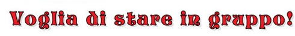

Noi giovani
Attività 2 Voglia di stare in gruppo!
Click on the audio button to listen to the voice-over of this article.

Per i giovani stare insieme agli amici è un desiderio molto forte ed è importante fare parte di un gruppo e sentirsi parte di qualcosa.
Il modo di vestirsi è il segno principale di appartenenza al gruppo, insieme alla musica.
Il look ha un ruolo predominante. Il modo di vestire (cioè l’abbigliamento e gli accessori) e di mostrarsi agli altri è il primo segnale di appartenenza.
Poi c'è la musica. I videoclip sono la forma espressiva che parla veramente ai ragazzi e in cui i giovani si riconoscono. Ci sono anche gli spot pubblicitari che sono veri catalizzatori di novità e tendenze.
Il gruppo come sostegno e divertimento
Per molti giovani il gruppo rappresenta la possibilità di avere un sostegno o un aiuto. Appartenere ad un gruppo vuole dire condividere qualcosa.
Molti identificano il gruppo con il divertimento. C’è chi preferisce il gruppo in cui si parla o si studia. Gli argomenti più frequenti sono quelli relativi al privato, ai propri problemi in famiglia, alle proprie esperienze sentimentali. Si parla anche di moda, musica e dei programmi visti in tv.
Per altri non si fa niente di particolare all'interno del gruppo. Si sta insieme oppure si va in giro, al bar, pub o in altri locali.
Use the information in the article to complete some writing exercises in this worksheet.